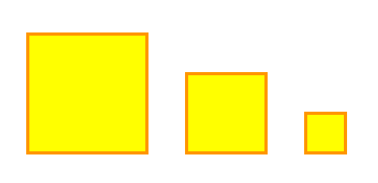
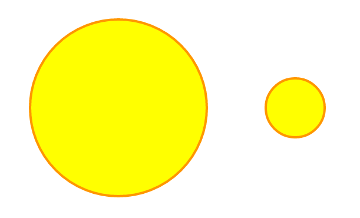
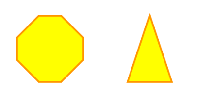

<canvas></canvas>
Какую роль в современном вебе играет Canvas?
Поддержка браузеров
IE 9.0+
Firefox 3.0+
Safari 3.0+
Chrome 3.0+
Opera 10.0+
iOS 3.0+
Android 1.0+
Canvas API
Нарисуем прямоугольники:
var canvas = document.getElementById('paper');
var ctx = canvas.getContext('2d');
ctx.fillStyle = 'yellow'; // fill
ctx.strokeStyle = '#FF9600'; // stroke
ctx.lineWidth = 4; // stroke
// rectangle
ctx.fillRect(100, 100, 150, 150); // fill
ctx.strokeRect(100, 100, 150, 150); // stroke
// path
ctx.rect(300, 150, 100, 100); //rectangle area
ctx.rect(450, 200, 50, 50); //rectangle area
ctx.fill(); // fill
ctx.stroke(); // stroke

Нарисуем круги:
var canvas = document.getElementById('paper');
var ctx = canvas.getContext('2d');
canvas.width = 800;
canvas.height = 600;
// STYLE
ctx.fillStyle = 'yellow'; // fill
ctx.strokeStyle = '#FF9600'; // stroke
ctx.lineWidth = 4; // stroke
// DRAW CIRCLE
ctx.beginPath(); // next path
ctx.arc(400, 200, 150, 0, 2*Math.PI);
ctx.fill(); // fill
ctx.stroke(); // stroke
ctx.beginPath(); // next path
ctx.arc(700, 200, 50, 0, 2*Math.PI);
ctx.fill(); // fill
ctx.stroke(); // stroke

Рисуем линиями:
var canvas = document.getElementById('paper');
var ctx = canvas.getContext('2d');
canvas.width = 800;
canvas.height = 600;
// STYLE
ctx.fillStyle = 'yellow'; // fill
ctx.strokeStyle = '#FF9600'; // stroke
ctx.lineWidth = 4; // stroke
var offset = 100;
ctx.beginPath();
ctx.moveTo(offset + 50, offset+50);
ctx.lineTo(offset + 100, offset+50);
ctx.lineTo(offset + 150, offset+100);
ctx.lineTo(offset + 150, offset+150);
ctx.lineTo(offset + 100, offset+200);
ctx.lineTo(offset + 50, offset+200);
ctx.lineTo(offset + 0, offset+150);
ctx.lineTo(offset + 0, offset+100);
ctx.closePath();
ctx.fill();
ctx.stroke();
ctx.beginPath();
ctx.moveTo(offset + 300, offset+50);
ctx.lineTo(offset +350, offset+200);
ctx.lineTo(offset +250, offset+200);
ctx.closePath();
ctx.fill();
ctx.stroke();

Анимации
var canvas = document.getElementById('paper');
var ctx = canvas.getContext('2d');
// STYLE
ctx.fillStyle = 'yellow'; // fill
ctx.strokeStyle = '#FF9600'; // stroke
ctx.lineWidth = 4; // stroke
var x = 400;
var y = 300;
var r = 30;
var count = 0;
function draw() {
ctx.clearRect(0, 0, canvas.width, canvas.height);
ctx.beginPath(); // next path
ctx.arc(x, y, r, 0, 2*Math.PI);
ctx.fill(); // fill
ctx.stroke(); // stroke
}
function update() {
count += 0.1;
x += Math.sin(0.2) * 10;
y += Math.cos(count) * 5;
if(x > canvas.width + r) x = -r;
}
function loop() {
update();
draw();
requestAnimationFrame(loop)
}
loop();